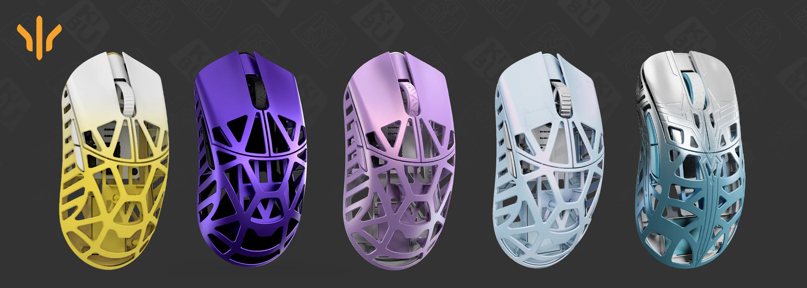
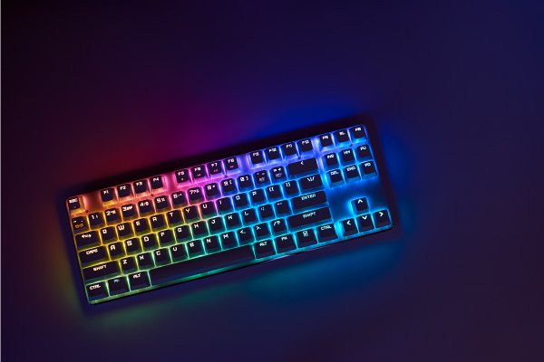
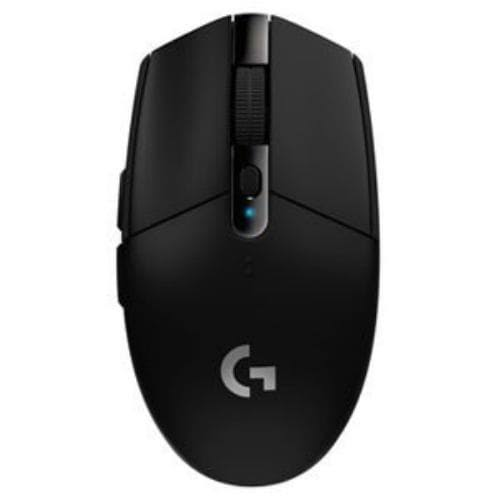
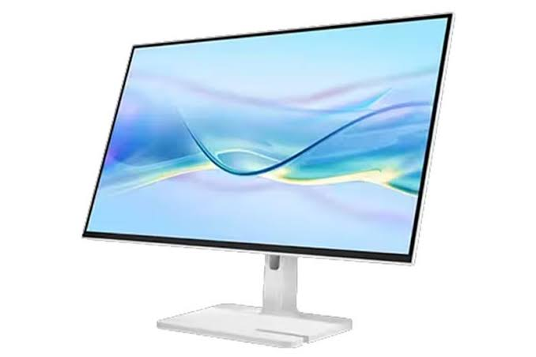
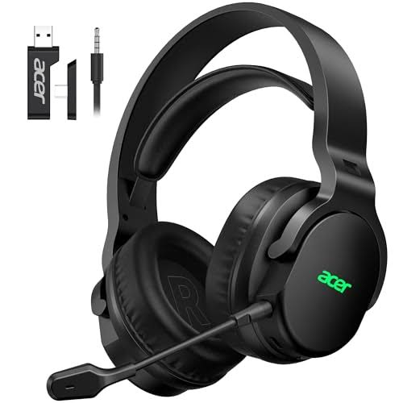
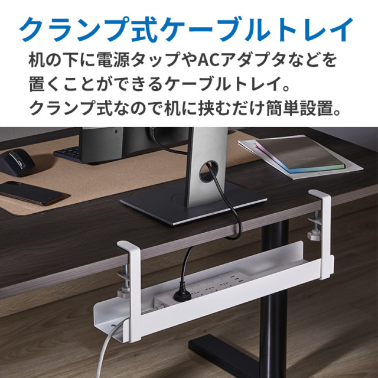

マウスの革命、軽さ、大きさすべての頂点
手の小さい人やマウスが重たいと感じる人にぜひおすすめしたい商品を紹介します
キーボード、マウス、モニター。買う前に知りたかったことを、実際に使った感想から書いています。

手の小さい人やマウスが重たいと感じる人にぜひおすすめしたい商品を紹介します

赤軸・茶軸・青軸の違いを、実際にタイピングして比べました。事務作業が多い人向けの選び方をまとめています。

長時間作業で手首が痛くならない形とサイズの目安を紹介します。

フルHDから乗り換えて気づいた、見やすさと設置スペースの話。

マイクの聞こえ方と、つけ心地を中心に比べました。

1,000円台で試せる、配線まわりの片づけアイテム。
このカテゴリの記事はまだありません。
PC周辺機器を実際に使って、良かった点も気になった点も書くブログです。スペック表だけではわからない使い心地を伝えることを大事にしています。